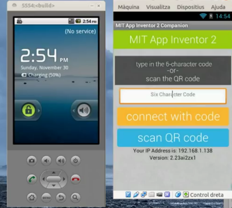

Emular un android, sempre és un petit inconvenient, ja que s’ha de muntar tota una arquitectura i fa que vagi una mica lent. Actualment tenim disponible un projecte que munta un android…
Una mica de tot
Categoria

Emular un android, sempre és un petit inconvenient, ja que s’ha de muntar tota una arquitectura i fa que vagi una mica lent. Actualment tenim disponible un projecte que munta un android…
Posted by josepm on Monday, 8 December 2014 Ho podeu veure a pantalla complerta clicant en aquest enllaç . O bé en un altra format a aquest altra enllaç.
App inventor és una eina força potent, i com a tal ens permet manipular dades emmagatzemades en diferents llocs. En aquest cas parlem de treballar amb Fusion tables, o bé amb fitxers…

Provar les aplicacions per a móbils creades amb App Inventor amb l’emulador, és una tasca complicada i ferregosa, que sempre porta problemes. Una solució és virtualitzar un android, per exemple amb virtualbox,…